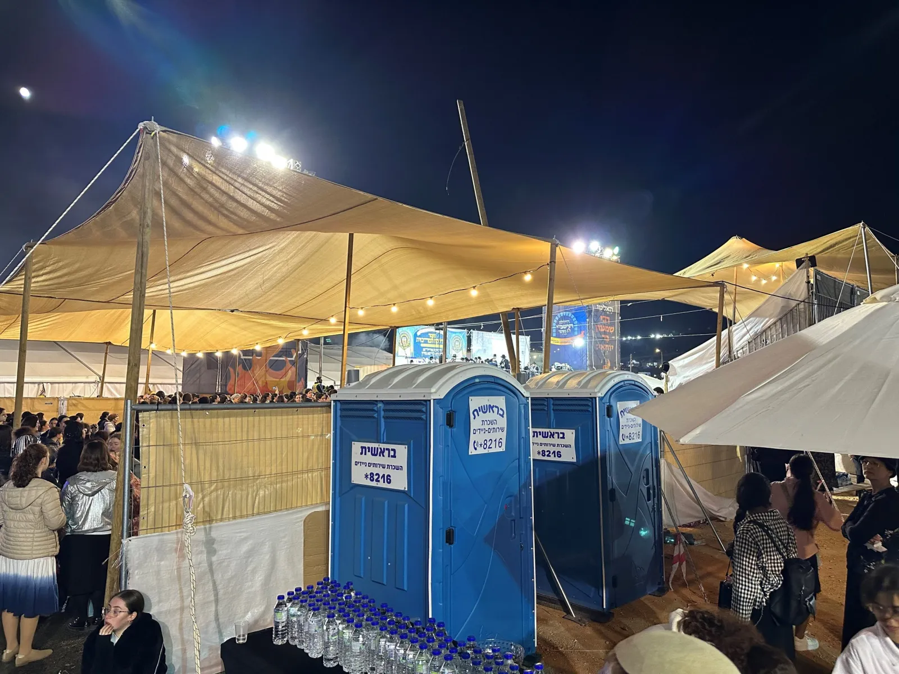
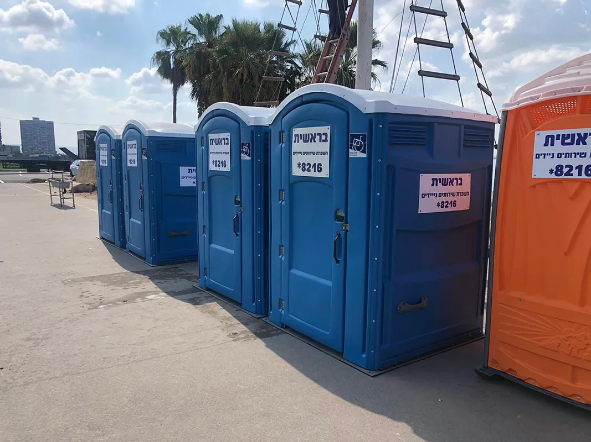
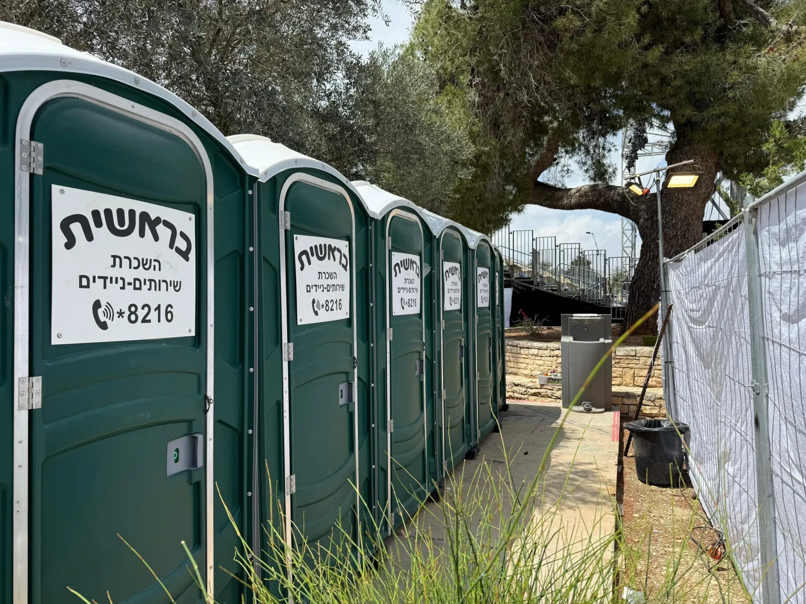
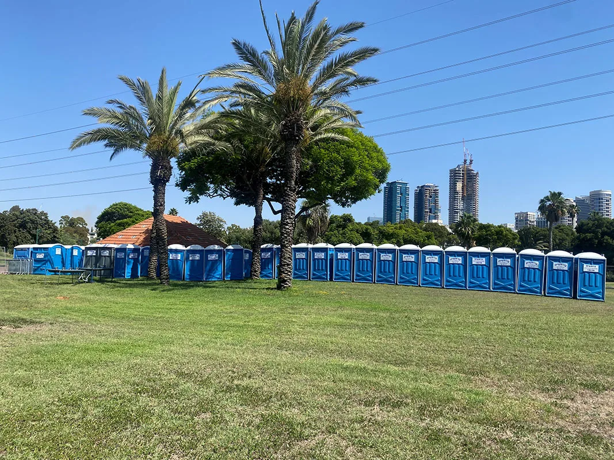
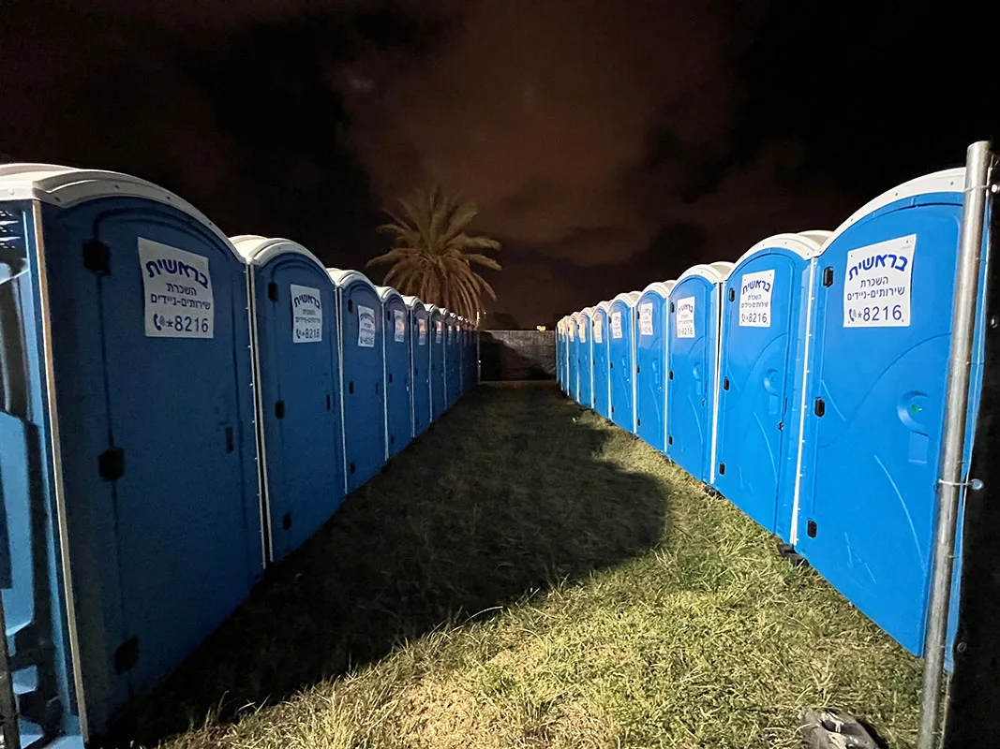

פרויקטים: שירותים ניידים באירועים גדולים
חמישה אירועים גדולים שבהם הקמנו מערך נוחיות מלא: היכן, לכמה אנשים ומה סופק בשטח. מאירוע של אלפי אורחים ועד אירוע של מאות אלפי משתתפים.
מירון, ל"ג בעומר
- מיקום
- מתחם הר מירון וצירי הגישה
- היקף משתתפים
- כ-500,000 מתפללים ומבקרים
אחד האירועים ההמוניים והמורכבים בישראל: כמות קהל עצומה, תנאי שטח הרריים וצורך בהיגיינה ברמה הגבוהה ביותר.
מאות תאי שירותים ניידים
שינוע והצבה במוקדי מפתח, מחניוני האוטובוסים וצירי העלייה להר ועד מתחמי ההדלקה.
תכנון מקדים
עבודה בתיאום מלא עם גורמי הביטחון וההצלה, ופריסת הציוד לפני סגירת הצירים והגעת ההמונים.
תחזוקה מסביב לשעון
צוותי שטח לשירות, ריקון, ניקיון ותחזוקה לאורך כל ימי ההילולה.

פסטיבל עכו
- מיקום
- העיר העתיקה, עכו
- היקף משתתפים
- כ-25,000 מבקרים לאורך ימי הפסטיבל
הצבת תשתית זמנית בעיר עתיקה עם סמטאות צרות וארכיטקטורה היסטורית. אנחנו מלווים את הפסטיבל מזה שנים רבות.
עשרות תאי שירותים ניידים
הצבה זהירה בנקודות מפתח ברחבי העיר העתיקה, עם גישה נוחה למבקרים ושמירה על זרימת הקהל בין מוקדי ההופעות.
תחזוקה רב-יומית
מערך מתוגבר של אנשי שטח לניקיון, ריקון ותחזוקה שוטפת בכל שעות הפעילות, מתחילת הפסטיבל ועד סופו.

טקס הדלקת המשואות
- מיקום
- הר הרצל, ירושלים
- היקף משתתפים
- כ-4,000 אורחים, מכובדים ואנשי צוות
אירוע ממלכתי שדורש היערכות מדויקת. פעלנו בתיאום מלא מול גורמי הביטחון וההפקה, ובעמידה בתקני הבטיחות הנדרשים.
קרונות VIP מפוארים
למתחמי ההפקה, האירוח ואורחי הכבוד.
שירותים ניידים
תאי שירותים נקיים ונגישים ברחבי הר הרצל.
ליווי משלב ההקמה
פתרונות סניטריים לצוותים שעבדו בשטח ימים ושבועות לפני הטקס.
תחזוקה בזמן אמת
שירות, ניקיון ותחזוקה לאורך ימי ההקמה ובמהלך הטקס עצמו.

מצעד הגאווה, תל אביב
- מיקום
- מסלול המצעד ומתחמי הכינוס, ברחבי תל אביב
- היקף משתתפים
- כ-170,000 חוגגים ומבקרים
מצעד רחוב מחייב פיזור חכם במוקדים רבים, גמישות תפעולית ושיתוף פעולה הדוק מול גורמי העירייה והביטחון.
מאות תאי שירותים ניידים
לאורך מסלול המצעד, במתחמי הכינוס ובנקודת הסיום, לגישה מהירה ולצמצום תורים.
קרונות VIP להפקה ולאמנים
קרונות מפוארים וממוזגים מאחורי הקלעים במתחמי הבמות.
תחזוקה וניקיון
אנשי שירות וצוותי תפעול לאורך כל שעות הפעילות.

פסטיבל האופרה, פארק הירקון
- מיקום
- פארק הירקון, תל אביב
- היקף משתתפים
- כ-30,000 מבקרים ואורחים
מערך שנתפר למידות האירוע: שילוב בין סוגי התאים אפשר ניתוב קהל חכם והצבה שאינה פוגעת בטבע המקומי.
שירותים כימיים
עשרות תאים בנקודות אסטרטגיות ברחבי הפארק, למענה מהיר ונגיש לקהל הרחב.
קרונות VIP מפוארים
מאחורי הקלעים ובמתחמי האירוח, לאמנים, לתזמורת ולאורחי הכבוד.
עמדות ברזיות
עמדות מים לשטיפת ידיים והתרעננות לאורך כל הפסטיבל.

פריסה ארצית
מהר מירון והעיר העתיקה בעכו, דרך הר הרצל, ועד רחובות תל אביב ופארק הירקון. לכל אזור דף משלו:
שירותים ניידים בצפון · שירותים ניידים במרכז · שירותים ניידים בדרום
מתכננים אירוע גדול? חייגו 8216*, ונבנה יחד תוכנית לוגיסטית והצעת מחיר.